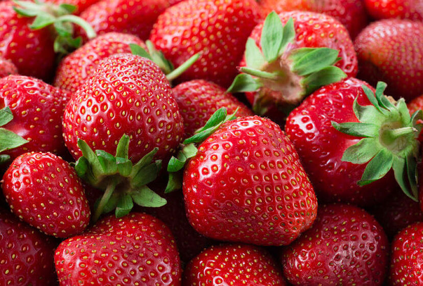

Fresas
La fresa es un fruto de color rojo brillante, suculento y fragante que se obtiene de la planta que recibe su mismo nombre.
Donde venden fresas
Chocolates
Los chocolates son el alimento que se obtiene mezclando azúcar con dos productos que derivan de la manipulación de las semillas del cacao.
Chocolates mas ricos en SLP
Sandias
La sandía es un fruto grande y de forma más o menos esférica que suele consumirse cruda como postre.
Una Sandia fresca de los estercoleros